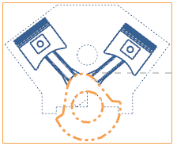
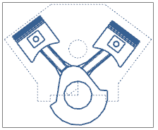

右击俯视图边界并选择样式。
点击定义视图的渲染集。
双击 PISTONS_RODS 以将它添加到视图中的有序渲染集中。
点击高亮显示重叠的对象。

将在视图中高亮显示曲轴部件，这表示它们被包含在多个渲染集中。
点击两次确定。
渲染集将显示在视图中。

曲轴后的连杆部分将不再可见，注意到将以实线重新显示曲轴部件，这是因为您应用到视图中的最后一个渲染集替代了前一个渲染集的显示，您的目的是要以双点划线显示曲轴。